### LOAD AND FORMAT DATA
#load libraries
library(readr)
library(reshape2)
library(dplyr)
Attaching package: 'dplyr'The following objects are masked from 'package:stats':
filter, lagThe following objects are masked from 'package:base':
intersect, setdiff, setequal, unionlibrary(tidyr)
Attaching package: 'tidyr'The following object is masked from 'package:reshape2':
smithslibrary(tidyverse)── Attaching core tidyverse packages ──────────────────────── tidyverse 2.0.0 ──
✔ forcats 1.0.0 ✔ purrr 1.0.2
✔ ggplot2 3.5.1 ✔ stringr 1.5.1
✔ lubridate 1.9.3 ✔ tibble 3.2.1── Conflicts ────────────────────────────────────────── tidyverse_conflicts() ──
✖ dplyr::filter() masks stats::filter()
✖ dplyr::lag() masks stats::lag()
ℹ Use the conflicted package (<http://conflicted.r-lib.org/>) to force all conflicts to become errorslibrary(plm)
Attaching package: 'plm'
The following objects are masked from 'package:dplyr':
between, lag, leadlibrary(car)Loading required package: carData
Attaching package: 'car'
The following object is masked from 'package:purrr':
some
The following object is masked from 'package:dplyr':
recodelibrary(caret)Loading required package: lattice
Attaching package: 'caret'
The following object is masked from 'package:purrr':
liftlibrary(glmnet)Loading required package: Matrix
Attaching package: 'Matrix'
The following objects are masked from 'package:tidyr':
expand, pack, unpack
Loaded glmnet 4.1-8library(stargazer)
Please cite as:
Hlavac, Marek (2022). stargazer: Well-Formatted Regression and Summary Statistics Tables.
R package version 5.2.3. https://CRAN.R-project.org/package=stargazer #read + format data
data<- read_csv("data3.csv")Warning: One or more parsing issues, call `problems()` on your data frame for details,
e.g.:
dat <- vroom(...)
problems(dat)Rows: 2609 Columns: 36
── Column specification ────────────────────────────────────────────────────────
Delimiter: ","
chr (2): Country Name, Series Name
dbl (33): 1990, 1991, 1992, 1993, 1994, 1995, 1996, 1997, 1998, 1999, 2000, ...
lgl (1): 2023
ℹ Use `spec()` to retrieve the full column specification for this data.
ℹ Specify the column types or set `show_col_types = FALSE` to quiet this message.melted_data <- melt(data, id.vars = c("Country Name", "Series Name"), variable.name = "Year", value.name = "Value")
# aggregate duplicate rows
melted_data_aggregated <- melted_data %>%
group_by(`Country Name`, `Series Name`, Year) %>%
summarize(Value = mean(Value, na.rm = TRUE))`summarise()` has grouped output by 'Country Name', 'Series Name'. You can
override using the `.groups` argument.# wide data
data_wide <- spread(melted_data_aggregated, key = "Series Name", value = Value)
data_wide$Country_Name <- as.character(data_wide$`Country Name`)
#view column names
names(data_wide) [1] "Country Name"
[2] "Year"
[3] "Central government debt, total (% of GDP)"
[4] "Control of Corruption: Estimate"
[5] "Ease of doing business score (0 = lowest performance to 100 = best performance)"
[6] "Educational attainment, at least completed lower secondary, population 25+, total (%) (cumulative)"
[7] "GDP per capita growth (annual %)"
[8] "General government final consumption expenditure (current US$)"
[9] "Gini index"
[10] "Mortality rate, infant (per 1,000 live births)"
[11] "Net official development assistance and official aid received (current US$)"
[12] "Political Stability and Absence of Violence/Terrorism: Estimate"
[13] "Population growth (annual %)"
[14] "Poverty gap at $2.15 a day (2017 PPP) (%)"
[15] "<NA>"
[16] "Country_Name" #list of sub-saharan african countries
sub_saharan_africa <- c("Angola", "Benin", "Botswana", "Burkina Faso", "Burundi",
"Cabo Verde", "Cameroon", "Central African Republic", "Chad", "Comoros",
"Democratic Republic of the Congo", "Republic of the Congo", "Djibouti",
"Equatorial Guinea", "Eritrea", "Eswatini", "Ethiopia", "Gabon",
"The Gambia", "Ghana", "Guinea", "Guinea-Bissau", "Ivory Coast",
"Kenya", "Lesotho", "Liberia", "Madagascar", "Malawi", "Mali",
"Mauritania", "Mauritius", "Mozambique", "Namibia", "Niger",
"Nigeria", "Rwanda", "São Tomé and Príncipe", "Senegal", "Seychelles",
"Sierra Leone", "Somalia", "South Africa", "South Sudan", "Sudan",
"Tanzania", "Togo", "Uganda", "Zambia", "Zimbabwe")
#assign 1 to sub-saharan africa countries + 0 to rest
data_wide <- data_wide %>%
mutate(sub_saharan = ifelse(Country_Name %in% sub_saharan_africa, 1, 0))
#subset data to include 50 other developing countries
all_developing <- c("Afghanistan", "Albania", "Algeria", "Angola", "Antigua and Barbuda",
"Argentina", "Armenia", "Azerbaijan", "Bangladesh", "Barbados",
"Belize", "Benin", "Bhutan", "Bolivia", "Bosnia and Herzegovina",
"Botswana", "Brazil", "Bulgaria", "Burkina Faso", "Burundi",
"Cambodia", "Cameroon", "Cape Verde", "Central African Republic",
"Chad", "China", "Colombia", "Comoros", "Congo",
"Costa Rica", "Croatia", "Cuba", "Cyprus", "Democratic Republic of the Congo",
"Djibouti", "Dominica", "Dominican Republic", "Ecuador", "Egypt",
"El Salvador", "Equatorial Guinea", "Eritrea", "Eswatini", "Ethiopia",
"Fiji", "Gabon", "Gambia", "Georgia", "Ghana",
"Grenada", "Guatemala", "Guinea", "Guinea-Bissau", "Guyana",
"Haiti", "Honduras", "India", "Indonesia", "Iran",
"Iraq", "Jamaica", "Jordan", "Kazakhstan", "Kenya",
"Kiribati", "Kosovo", "Kuwait", "Kyrgyzstan", "Laos",
"Lebanon", "Lesotho", "Liberia", "Libya", "Madagascar",
"Malawi", "Malaysia", "Maldives", "Mali", "Marshall Islands",
"Mauritania", "Mauritius", "Mexico", "Micronesia", "Moldova",
"Mongolia", "Montenegro", "Morocco", "Mozambique", "Myanmar",
"Namibia", "Nauru", "Nepal", "Nicaragua", "Niger",
"Nigeria", "North Korea", "North Macedonia", "Oman", "Pakistan",
"Palau", "Palestine", "Panama", "Papua New Guinea", "Paraguay",
"Peru", "Philippines", "Qatar", "Romania", "Russia",
"Rwanda", "Saint Kitts and Nevis", "Saint Lucia", "Saint Vincent and the Grenadines",
"Samoa", "Sao Tome and Principe", "Saudi Arabia", "Senegal", "Serbia",
"Seychelles", "Sierra Leone", "Solomon Islands", "Somalia", "South Africa",
"South Korea", "South Sudan", "Sri Lanka", "Sudan", "Suriname",
"Syria", "Tajikistan", "Tanzania", "Thailand", "Timor-Leste",
"Togo", "Tonga", "Trinidad and Tobago", "Tunisia", "Turkey",
"Turkmenistan", "Tuvalu", "Uganda", "Ukraine", "United Arab Emirates",
"Uruguay", "Uzbekistan", "Vanuatu", "Venezuela", "Vietnam",
"Yemen", "Zambia", "Zimbabwe")
sub_data <- subset(data_wide, Country_Name %in% all_developing)
#time lag
sub_data <- sub_data %>%
arrange(Country_Name, Year) %>%
group_by(Country_Name) %>%
mutate(foreign_aid_lag1 = lag(`Net official development assistance and official aid received (current US$)`, 1),
foreign_aid_lag2 = lag(`Net official development assistance and official aid received (current US$)`, 2)) %>%
ungroup()
### EXPLORATORY DATA ANALYSIS
ggplot(sub_data, aes(x = sub_data$`Gini index`)) +
geom_histogram(fill = "deeppink", color = "black", bins = 5) +
labs(title = "Gini Index Histogram", x="Gini Index", y="Count")Warning: Use of `` sub_data$`Gini index` `` is discouraged.
ℹ Use `Gini index` instead.Warning: Removed 3364 rows containing non-finite outside the scale range
(`stat_bin()`).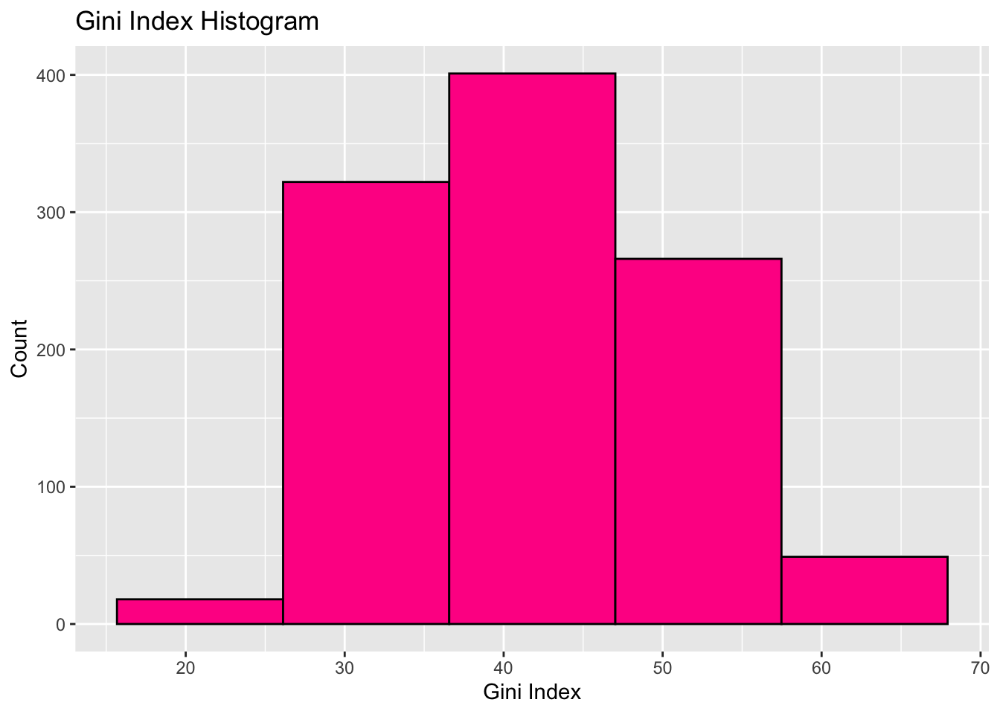
### REGRESSION MODELS
# MODEL 1 (Perform regression analysis with all available variables as controls)
model1 <- lm(`GDP per capita growth (annual %)` ~ `Net official development assistance and official aid received (current US$)` +
`Central government debt, total (% of GDP)` +
`Control of Corruption: Estimate` +
`Ease of doing business score (0 = lowest performance to 100 = best performance)` +
`Educational attainment, at least completed lower secondary, population 25+, total (%) (cumulative)` +
`General government final consumption expenditure (current US$)` +
`Gini index` +
`Political Stability and Absence of Violence/Terrorism: Estimate` +
`Population growth (annual %)`,
data = sub_data)
#MODEL 2
# View summary of regression results
summary(model1)
Call:
lm(formula = `GDP per capita growth (annual %)` ~ `Net official development assistance and official aid received (current US$)` +
`Central government debt, total (% of GDP)` + `Control of Corruption: Estimate` +
`Ease of doing business score (0 = lowest performance to 100 = best performance)` +
`Educational attainment, at least completed lower secondary, population 25+, total (%) (cumulative)` +
`General government final consumption expenditure (current US$)` +
`Gini index` + `Political Stability and Absence of Violence/Terrorism: Estimate` +
`Population growth (annual %)`, data = sub_data)
Residuals:
Min 1Q Median 3Q Max
-3.5972 -0.8642 0.2265 1.2066 3.0235
Coefficients:
Estimate
(Intercept) 1.143e+01
`Net official development assistance and official aid received (current US$)` 2.530e-10
`Central government debt, total (% of GDP)` 2.338e-02
`Control of Corruption: Estimate` 1.211e+00
`Ease of doing business score (0 = lowest performance to 100 = best performance)` 1.516e-02
`Educational attainment, at least completed lower secondary, population 25+, total (%) (cumulative)` -2.050e-02
`General government final consumption expenditure (current US$)` -1.964e-12
`Gini index` -2.573e-01
`Political Stability and Absence of Violence/Terrorism: Estimate` -1.861e+00
`Population growth (annual %)` 1.124e-01
Std. Error
(Intercept) 5.101e+00
`Net official development assistance and official aid received (current US$)` 6.339e-10
`Central government debt, total (% of GDP)` 2.044e-02
`Control of Corruption: Estimate` 6.939e-01
`Ease of doing business score (0 = lowest performance to 100 = best performance)` 6.793e-02
`Educational attainment, at least completed lower secondary, population 25+, total (%) (cumulative)` 2.044e-02
`General government final consumption expenditure (current US$)` 3.307e-12
`Gini index` 6.331e-02
`Political Stability and Absence of Violence/Terrorism: Estimate` 1.052e+00
`Population growth (annual %)` 4.192e-01
t value
(Intercept) 2.240
`Net official development assistance and official aid received (current US$)` 0.399
`Central government debt, total (% of GDP)` 1.144
`Control of Corruption: Estimate` 1.745
`Ease of doing business score (0 = lowest performance to 100 = best performance)` 0.223
`Educational attainment, at least completed lower secondary, population 25+, total (%) (cumulative)` -1.003
`General government final consumption expenditure (current US$)` -0.594
`Gini index` -4.065
`Political Stability and Absence of Violence/Terrorism: Estimate` -1.769
`Population growth (annual %)` 0.268
Pr(>|t|)
(Intercept) 0.03197
`Net official development assistance and official aid received (current US$)` 0.69242
`Central government debt, total (% of GDP)` 0.26095
`Control of Corruption: Estimate` 0.09023
`Ease of doing business score (0 = lowest performance to 100 = best performance)` 0.82474
`Educational attainment, at least completed lower secondary, population 25+, total (%) (cumulative)` 0.32310
`General government final consumption expenditure (current US$)` 0.55663
`Gini index` 0.00028
`Political Stability and Absence of Violence/Terrorism: Estimate` 0.08610
`Population growth (annual %)` 0.79025
(Intercept) *
`Net official development assistance and official aid received (current US$)`
`Central government debt, total (% of GDP)`
`Control of Corruption: Estimate` .
`Ease of doing business score (0 = lowest performance to 100 = best performance)`
`Educational attainment, at least completed lower secondary, population 25+, total (%) (cumulative)`
`General government final consumption expenditure (current US$)`
`Gini index` ***
`Political Stability and Absence of Violence/Terrorism: Estimate` .
`Population growth (annual %)`
---
Signif. codes: 0 '***' 0.001 '**' 0.01 '*' 0.05 '.' 0.1 ' ' 1
Residual standard error: 1.743 on 33 degrees of freedom
(4377 observations deleted due to missingness)
Multiple R-squared: 0.5654, Adjusted R-squared: 0.4468
F-statistic: 4.769 on 9 and 33 DF, p-value: 0.0004156plot(model1)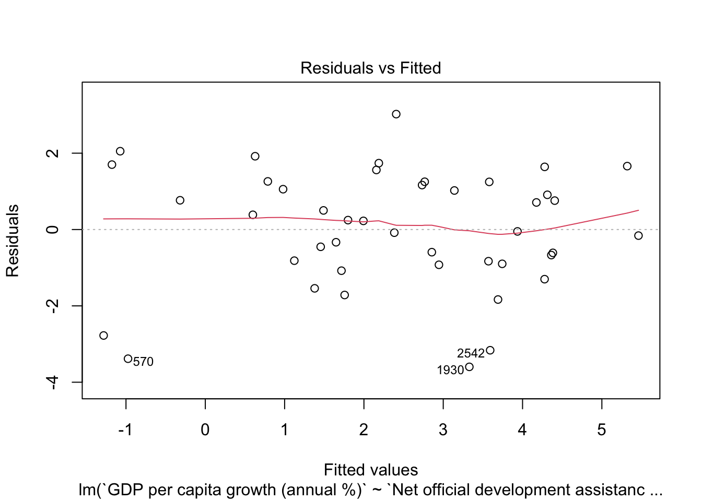
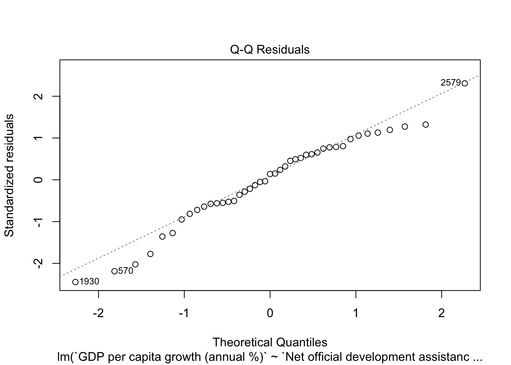
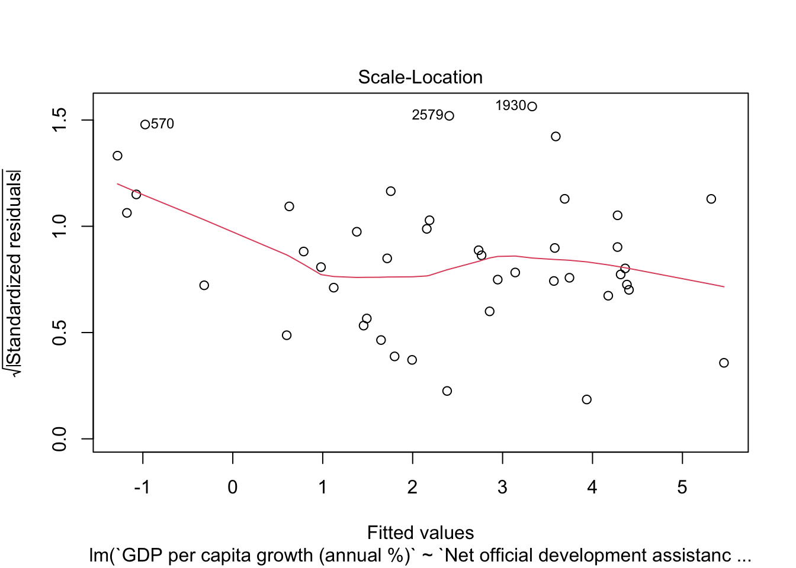
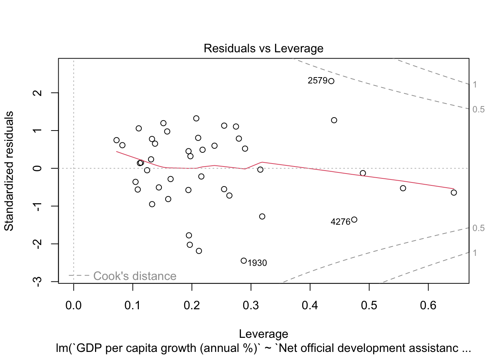
model2 <- lm(`Mortality rate, infant (per 1,000 live births)` ~ `Net official development assistance and official aid received (current US$)` +
`Central government debt, total (% of GDP)` +
`Control of Corruption: Estimate` +
`Ease of doing business score (0 = lowest performance to 100 = best performance)` +
`Educational attainment, at least completed lower secondary, population 25+, total (%) (cumulative)` +
`General government final consumption expenditure (current US$)` +
`Gini index` +
`Political Stability and Absence of Violence/Terrorism: Estimate` +
`Population growth (annual %)` +
`Poverty gap at $2.15 a day (2017 PPP) (%)`,
data = sub_data)
# View summary of regression results
summary(model2)
Call:
lm(formula = `Mortality rate, infant (per 1,000 live births)` ~
`Net official development assistance and official aid received (current US$)` +
`Central government debt, total (% of GDP)` + `Control of Corruption: Estimate` +
`Ease of doing business score (0 = lowest performance to 100 = best performance)` +
`Educational attainment, at least completed lower secondary, population 25+, total (%) (cumulative)` +
`General government final consumption expenditure (current US$)` +
`Gini index` + `Political Stability and Absence of Violence/Terrorism: Estimate` +
`Population growth (annual %)` + `Poverty gap at $2.15 a day (2017 PPP) (%)`,
data = sub_data)
Residuals:
Min 1Q Median 3Q Max
-6.0937 -1.6078 -0.1819 1.1164 6.6910
Coefficients:
Estimate
(Intercept) 6.386e+01
`Net official development assistance and official aid received (current US$)` 6.405e-10
`Central government debt, total (% of GDP)` -4.050e-03
`Control of Corruption: Estimate` 1.563e+00
`Ease of doing business score (0 = lowest performance to 100 = best performance)` -2.853e-01
`Educational attainment, at least completed lower secondary, population 25+, total (%) (cumulative)` -1.323e-01
`General government final consumption expenditure (current US$)` 8.289e-12
`Gini index` -6.841e-01
`Political Stability and Absence of Violence/Terrorism: Estimate` -3.901e-01
`Population growth (annual %)` 6.356e-01
`Poverty gap at $2.15 a day (2017 PPP) (%)` 4.187e+00
Std. Error
(Intercept) 1.285e+01
`Net official development assistance and official aid received (current US$)` 1.077e-09
`Central government debt, total (% of GDP)` 3.498e-02
`Control of Corruption: Estimate` 1.691e+00
`Ease of doing business score (0 = lowest performance to 100 = best performance)` 1.762e-01
`Educational attainment, at least completed lower secondary, population 25+, total (%) (cumulative)` 3.962e-02
`General government final consumption expenditure (current US$)` 6.093e-12
`Gini index` 1.146e-01
`Political Stability and Absence of Violence/Terrorism: Estimate` 2.902e+00
`Population growth (annual %)` 9.026e-01
`Poverty gap at $2.15 a day (2017 PPP) (%)` 7.676e-01
t value
(Intercept) 4.971
`Net official development assistance and official aid received (current US$)` 0.595
`Central government debt, total (% of GDP)` -0.116
`Control of Corruption: Estimate` 0.925
`Ease of doing business score (0 = lowest performance to 100 = best performance)` -1.619
`Educational attainment, at least completed lower secondary, population 25+, total (%) (cumulative)` -3.339
`General government final consumption expenditure (current US$)` 1.360
`Gini index` -5.970
`Political Stability and Absence of Violence/Terrorism: Estimate` -0.134
`Population growth (annual %)` 0.704
`Poverty gap at $2.15 a day (2017 PPP) (%)` 5.454
Pr(>|t|)
(Intercept) 2.16e-05
`Net official development assistance and official aid received (current US$)` 0.55616
`Central government debt, total (% of GDP)` 0.90855
`Control of Corruption: Estimate` 0.36212
`Ease of doing business score (0 = lowest performance to 100 = best performance)` 0.11531
`Educational attainment, at least completed lower secondary, population 25+, total (%) (cumulative)` 0.00214
`General government final consumption expenditure (current US$)` 0.18322
`Gini index` 1.18e-06
`Political Stability and Absence of Violence/Terrorism: Estimate` 0.89390
`Population growth (annual %)` 0.48638
`Poverty gap at $2.15 a day (2017 PPP) (%)` 5.29e-06
(Intercept) ***
`Net official development assistance and official aid received (current US$)`
`Central government debt, total (% of GDP)`
`Control of Corruption: Estimate`
`Ease of doing business score (0 = lowest performance to 100 = best performance)`
`Educational attainment, at least completed lower secondary, population 25+, total (%) (cumulative)` **
`General government final consumption expenditure (current US$)`
`Gini index` ***
`Political Stability and Absence of Violence/Terrorism: Estimate`
`Population growth (annual %)`
`Poverty gap at $2.15 a day (2017 PPP) (%)` ***
---
Signif. codes: 0 '***' 0.001 '**' 0.01 '*' 0.05 '.' 0.1 ' ' 1
Residual standard error: 2.887 on 32 degrees of freedom
(4377 observations deleted due to missingness)
Multiple R-squared: 0.9133, Adjusted R-squared: 0.8862
F-statistic: 33.69 on 10 and 32 DF, p-value: 3.54e-14plot(model2)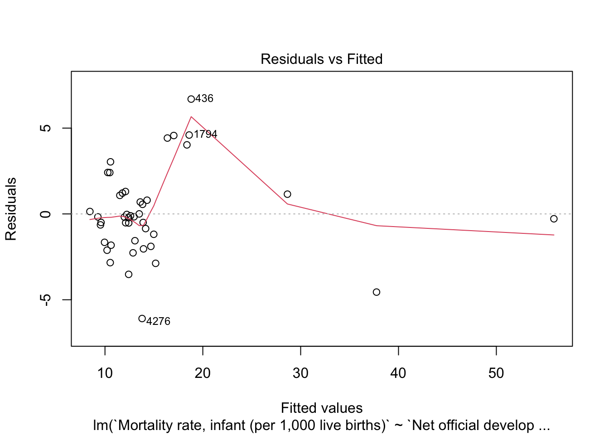
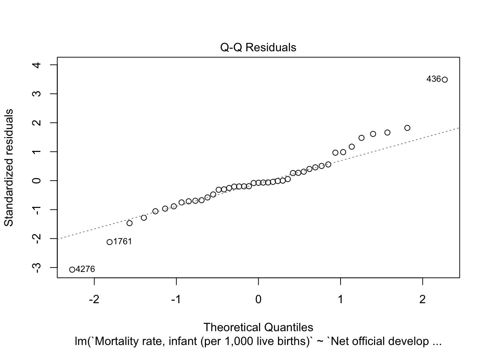
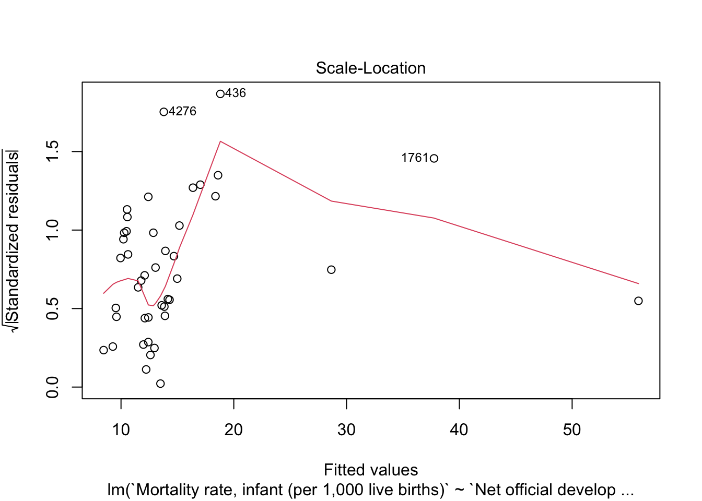
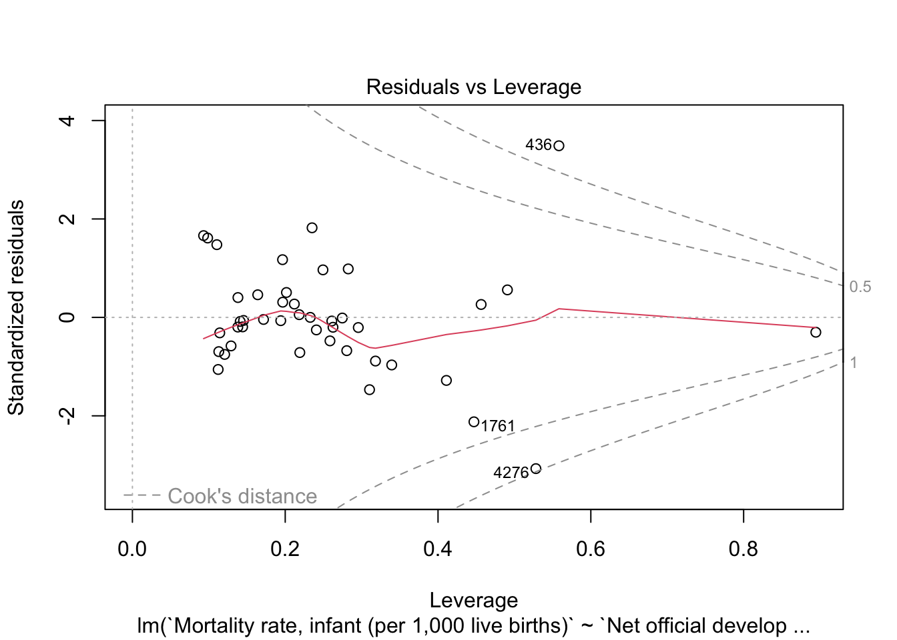
#MODEL 3
model3 <- lm(`Poverty gap at $2.15 a day (2017 PPP) (%)` ~ `Net official development assistance and official aid received (current US$)` +
`Central government debt, total (% of GDP)` +
`Control of Corruption: Estimate` +
`Ease of doing business score (0 = lowest performance to 100 = best performance)` +
`Educational attainment, at least completed lower secondary, population 25+, total (%) (cumulative)` +
`General government final consumption expenditure (current US$)` +
`Gini index` +
`Political Stability and Absence of Violence/Terrorism: Estimate` +
`Population growth (annual %)`,
data = sub_data)
# View summary of regression results
summary(model3)
Call:
lm(formula = `Poverty gap at $2.15 a day (2017 PPP) (%)` ~ `Net official development assistance and official aid received (current US$)` +
`Central government debt, total (% of GDP)` + `Control of Corruption: Estimate` +
`Ease of doing business score (0 = lowest performance to 100 = best performance)` +
`Educational attainment, at least completed lower secondary, population 25+, total (%) (cumulative)` +
`General government final consumption expenditure (current US$)` +
`Gini index` + `Political Stability and Absence of Violence/Terrorism: Estimate` +
`Population growth (annual %)`, data = sub_data)
Residuals:
Min 1Q Median 3Q Max
-1.4587 -0.2927 0.0212 0.2981 1.8855
Coefficients:
Estimate
(Intercept) 1.261e+01
`Net official development assistance and official aid received (current US$)` -3.106e-10
`Central government debt, total (% of GDP)` 1.144e-02
`Control of Corruption: Estimate` 1.616e+00
`Ease of doing business score (0 = lowest performance to 100 = best performance)` -1.767e-01
`Educational attainment, at least completed lower secondary, population 25+, total (%) (cumulative)` 2.681e-02
`General government final consumption expenditure (current US$)` -3.478e-12
`Gini index` -6.021e-02
`Political Stability and Absence of Violence/Terrorism: Estimate` -3.023e+00
`Population growth (annual %)` 7.513e-01
Std. Error
(Intercept) 1.916e+00
`Net official development assistance and official aid received (current US$)` 2.381e-10
`Central government debt, total (% of GDP)` 7.680e-03
`Control of Corruption: Estimate` 2.607e-01
`Ease of doing business score (0 = lowest performance to 100 = best performance)` 2.552e-02
`Educational attainment, at least completed lower secondary, population 25+, total (%) (cumulative)` 7.677e-03
`General government final consumption expenditure (current US$)` 1.242e-12
`Gini index` 2.378e-02
`Political Stability and Absence of Violence/Terrorism: Estimate` 3.951e-01
`Population growth (annual %)` 1.575e-01
t value
(Intercept) 6.578
`Net official development assistance and official aid received (current US$)` -1.304
`Central government debt, total (% of GDP)` 1.490
`Control of Corruption: Estimate` 6.198
`Ease of doing business score (0 = lowest performance to 100 = best performance)` -6.923
`Educational attainment, at least completed lower secondary, population 25+, total (%) (cumulative)` 3.492
`General government final consumption expenditure (current US$)` -2.801
`Gini index` -2.532
`Political Stability and Absence of Violence/Terrorism: Estimate` -7.650
`Population growth (annual %)` 4.772
Pr(>|t|)
(Intercept) 1.78e-07
`Net official development assistance and official aid received (current US$)` 0.20109
`Central government debt, total (% of GDP)` 0.14567
`Control of Corruption: Estimate` 5.39e-07
`Ease of doing business score (0 = lowest performance to 100 = best performance)` 6.55e-08
`Educational attainment, at least completed lower secondary, population 25+, total (%) (cumulative)` 0.00139
`General government final consumption expenditure (current US$)` 0.00846
`Gini index` 0.01629
`Political Stability and Absence of Violence/Terrorism: Estimate` 8.32e-09
`Population growth (annual %)` 3.61e-05
(Intercept) ***
`Net official development assistance and official aid received (current US$)`
`Central government debt, total (% of GDP)`
`Control of Corruption: Estimate` ***
`Ease of doing business score (0 = lowest performance to 100 = best performance)` ***
`Educational attainment, at least completed lower secondary, population 25+, total (%) (cumulative)` **
`General government final consumption expenditure (current US$)` **
`Gini index` *
`Political Stability and Absence of Violence/Terrorism: Estimate` ***
`Population growth (annual %)` ***
---
Signif. codes: 0 '***' 0.001 '**' 0.01 '*' 0.05 '.' 0.1 ' ' 1
Residual standard error: 0.6547 on 33 degrees of freedom
(4377 observations deleted due to missingness)
Multiple R-squared: 0.8307, Adjusted R-squared: 0.7845
F-statistic: 17.99 on 9 and 33 DF, p-value: 2.492e-10plot(model3)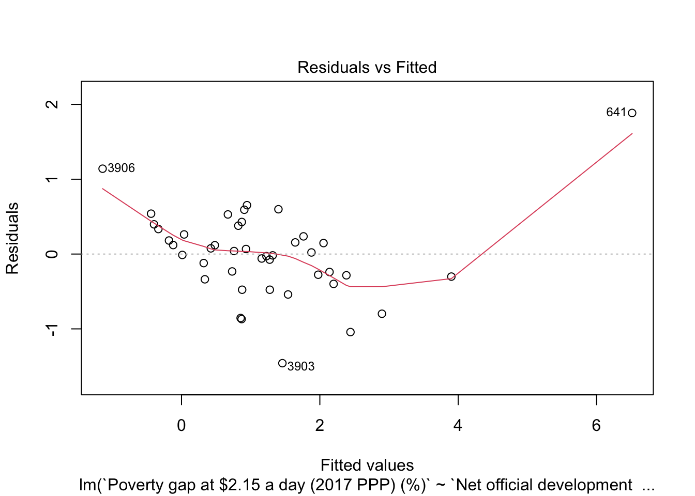
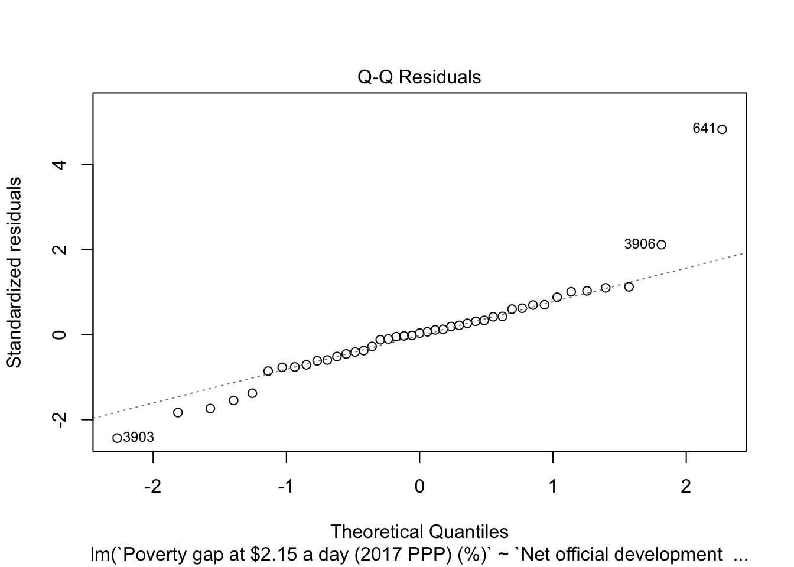
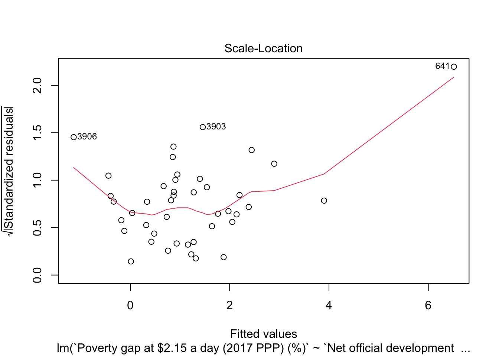
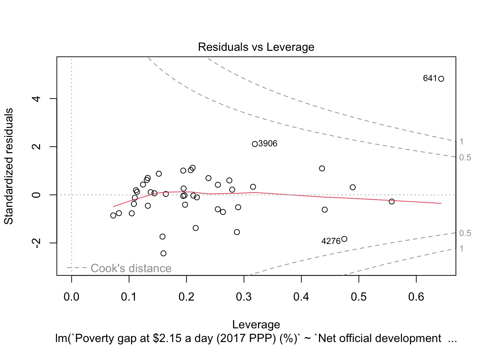
#Regression table
stargazer(model1, model2, model3, type = "text")
===================================================================================================================================================================================================================
Dependent variable:
--------------------------------------------------------------------------------------------------------------
`GDP per capita growth (annual %)` `Mortality rate, infant (per 1,000 live births)` 2.15 a day (2017 PPP) (%)`
(1) (2) (3)
-------------------------------------------------------------------------------------------------------------------------------------------------------------------------------------------------------------------
)` 0.000 0.000 -0.000
(0.000) (0.000) (0.000)
`Central government debt, total (% of GDP)` 0.023 -0.004 0.011
(0.020) (0.035) (0.008)
`Control of Corruption: Estimate` 1.211* 1.563 1.616***
(0.694) (1.691) (0.261)
`Ease of doing business score (0 = lowest performance to 100 = best performance)` 0.015 -0.285 -0.177***
(0.068) (0.176) (0.026)
`Educational attainment, at least completed lower secondary, population 25+, total (%) (cumulative)` -0.021 -0.132*** 0.027***
(0.020) (0.040) (0.008)
)` -0.000 0.000 -0.000***
(0.000) (0.000) (0.000)
`Gini index` -0.257*** -0.684*** -0.060**
(0.063) (0.115) (0.024)
`Political Stability and Absence of Violence/Terrorism: Estimate` -1.861* -0.390 -3.023***
(1.052) (2.902) (0.395)
`Population growth (annual %)` 0.112 0.636 0.751***
(0.419) (0.903) (0.157)
2.15 a day (2017 PPP) (%)` 4.187***
(0.768)
Constant 11.425** 63.862*** 12.606***
(5.101) (12.847) (1.916)
-------------------------------------------------------------------------------------------------------------------------------------------------------------------------------------------------------------------
Observations 43 43 43
R2 0.565 0.913 0.831
Adjusted R2 0.447 0.886 0.785
Residual Std. Error 1.743 (df = 33) 2.887 (df = 32) 0.655 (df = 33)
F Statistic 4.769*** (df = 9; 33) 33.691*** (df = 10; 32) 17.991*** (df = 9; 33)
===================================================================================================================================================================================================================
Note: *p<0.1; **p<0.05; ***p<0.01